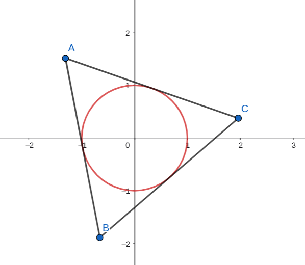

已知椭圆 \(C: \frac{x^2}{a^2}+\frac{y^2}{b^2}=1(a>b>0)\), \(C\) 的长轴长为 \(4\), 离心率为 \(\frac{1}{2}\)
求 \(C\) 的方程
已知 \(\Delta ABC\) 每条边都与 \(C\) 相切且 \(\Delta ABC\) 面积为 \(18\), 求点 \(A\) 的轨迹方程
解答
\(\dfrac{x^2}{4}+\dfrac{y^2}{3}=1\)
\(\dfrac{x^2}{16}+\dfrac{y^2}{12}=1\)
伸缩变换, 压缩成单位圆后, \(A'B'C'\) 面积为 \(3\sqrt{3}\), 并且是单位圆的外切三角形
可以证明, 它一定是个边长为 \(2\sqrt{3}\) 的正三角形
因此 \(A'\) 的轨迹是半径为 \(2\) 的圆, 伸缩回来, \(A\) 的轨迹为 \(\frac{x^2}{16}+\frac{y^2}{12}=1\)
诶, 那这是为什么呢? 我们来证明这个事情. 如图:

现在要证明: \(\Delta ABC\) 的半径为 \(3\sqrt{3}\) 且内切圆半径为 \(1\), 那么 \(ABC\) 必然为正三角形
假设三条边长为 \(a,b,c\). 由 \(S=\frac{1}{2}r(a+b+c)\), 得:
\[a+b+c=\frac{2S}{r}=6\sqrt{3}\]
半周长为 \(p=3\sqrt{3}\), 由海伦公式:
\[ S=\sqrt{p(p-a)(p-b)(p-c)} \]
得:
\[ (p-a)\cdot (p-b)\cdot (p-c) = 3\sqrt{3} \]
另一方面:
\[ (p-a)+(p-b)+(p-c)=3p-(a+b+c)=9\sqrt{3}-6\sqrt{3}=3\sqrt{3} \]
所以! 我们发现, \(p-a,p-b,p-c\) 这三个数, 和为 \(3\sqrt{3}\), 积也为 \(3\sqrt{3}\)
这很巧: 它们的算数平均数为 \(\dfrac{3\sqrt{3}}{3}=\sqrt{3}\), 几何平均数 \(\sqrt[3]{3\sqrt{3}}=\sqrt[3]{\sqrt{3}^3}=\sqrt{3}\), 正好相等!
我们知道这个取等条件, 只能是: 三个数相等
所以:
\[a=b=c\]
简单解一下知道它们都是 \(2\sqrt{3}\), 和上面说的是一样的
tags: 伸缩变换, 解三角形